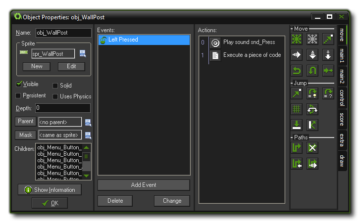
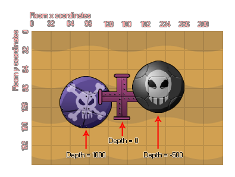

With the resources you have seen so far you can add some nice
images and sounds to the game resource tree, but they don't do
anything in the game itself yet! For that we need the most
important resource of GameMaker: Studio, the objects.
Objects are a special resource that we use to control aspects of a
game and to do specific things. Most of the time they have a sprite
associated with them so that you see them in the game rooms, but
sometimes they are used as a "behind the scenes" controller to do
things related to the user or for timing, etc... They can be given
behaviors and they can react to certain events as well as to each
other, and most of the things you see in a game are based on
objects and their interactions. Now, I say "based on" because you
don't actually place objects directly into the game rooms, but
rather you place instances of these objects which are
basically copies (or clones if you prefer) of the object resource.
This is a very important thing to remember as instances and objects
are not the same thing and each have their own set of
functions that can affect them.
In a game made with GameMaker: Studio, the characters,
monsters, balls, walls, etc... are all instances copied from a
basic object template that is found in the resource tree and then
placed in a room. So when we talk about something affecting or
changing an instance, we mean that one particular copy of an object
in a room is being affected while all the rest are not, but when we
talk about affecting or changing an object we mean that anything we
do to it will be reflected in all the instances created from that
point on too. So, the object is the template for the instance, and
the instance is what we place in a room to make our game.
To create an object in your game, choose Create Object from the Resources menu (or click the equivalent button on the toolbar) and the following window will open:

At first glance this may seem rather confusing, but the window
is split into sections and we shall cover each one individually so
you can get an overview of what they are for. Starting on the left,
there is some general information about the object, then in the
middle there is the list of events (moments in time) for the object
and the window to place the actions that are to be performed in
those events, and finally on the right there are the actions
themselves which you can select for the object to perform, grouped
under different tabs for ease of use. Events and actions will be
discussed in more detail in following sections of the manual. If
you have "Uses Physics" selected then there will be another part
visible in this window related to the physics options, but more on
that later!
As you would expect, you can (and should always) give your object a
name. This should never contain spaces nor unauthorized characters
and should be short but memorable so that you can easily identify
resources later when you may have many of them, for example may
people use a prefix or a suffix to identify the differences between
resources, like "obj_Ship" or "Ship_obj". Next you can choose the
sprite for the object should you wish it to have one. To this end,
click with the left mouse button on the sprite box or the menu
button next to it and a pop-up dialogue will appear with a list of
all the available sprites from the resource tree, then just select
the one you want to use for the object. You can also drag a sprite
resource from the resource tree and drop it onto the object sprite
properties and it will be added to the object that way.
If you do not have an appropriate sprite yet, you can click the
button New to create a new sprite resource and edit it as
you wish, just as if you had created the resource through the
standard creation options, only now when you click "Ok", it will
automatically be assigned to the object that you had open when you
started to create it. Once you select a resource there will be an
additional Edit button here that you can use to change the
sprite too. This can be faster than first finding the resource in
the list of resources and then indicating you want to edit it.
Below this there are many other options which are all outlined
below:
Visible indicates whether instances of this object are visible
when the room starts. Normally most instances are visible but
sometimes it is useful to have invisible ones - for example, you
can use them for way-points to control a moving monster, or to keep
track values and perform certain timed actions. Invisible objects
will still react to events and if they have a sprite or a mask
assigned to them, they will also react should other instances
collide with them... they just can't be seen and do not perform
their draw event.
By checking solid you are indicating to GameMaker: Studio
that it should consider instances of this object to be a solid
object (like a wall). Collisions with instances of solid objects
are treated differently from collisions with non-solid objects and
as such you are strongly advised to use Solid only for
objects that are not moving.
You can set the Depth of the instances of an object,
which basically controls whether they go below or above other
objects at other depths. When instances are drawn on the screen
they are drawn in order of depth, with instances that have the
highest depth being drawn first and instances with the lowest depth
being drawn last. The following image illustrates this behaviour:
 It should be
noted here that instances of the same depth that overlap each other
in the room editor (or in game) have no guaranteed priority
over which one will be "on top" of the other and. If you want to
guarantee that an object lies on top of the others then you must
give it a negative (or low) depth. Conversely If you want to make
sure it lies below other instances then you have to give it a
positive (high) depth. Depth can also be changed in-game as it has
its own variable that can be changed and manipulated by actions or
in code.
Below depth there is the option to make an object persistent. A
persistent object is one that does not go away when the room is
changed, but rather it "persists" and is carried over into the new
room. It will only disappear when you explicitly destroy it, either
with a destroy action or in code. This means that if you place a
persistent object in one room, it will still be available in all
subsequent rooms and will continue to perform any actions assigned
to the events in its object properties. This is handy for when you
have, for example, a main character that moves from room to room
and you want to maintain the variables within that object the same,
but unless you take great care to create and destroy persistent
objects correctly, you can easily get errors creeping into your
project.
Note too that a persistent object will still have its Game
Start, Game End, Room Start and Room End
events triggered, however if you restart the game (with, for
example, the game_restart() function) all persistent
objects will be removed and only exist when created again by the
game. Also note that if you deactivate a persistent object,
it will no longer pass from one room to another unless re-activated
before the Room End event is triggered.
One of the most powerful options within the object properties is
the ability to assign a parent. Every object in the game can have a
parent object, but what does this mean? Well, when an object has a
parent, it can share code, actions and events with that parent.
This is called "inheritance" and an object that has a parent is
called a "child". But that's not all! You can also do checks and
run code on parent objects which automatically include the child
objects too which saves a lot of time and energy. Another way to
look at a parent object is as a way to "group" objects together
under the same umbrella and have them share certain things without
losing their own identity. For more information on parents (and
other advanced object properties) see More
About objects.
Please note that you can click the Parent button to
automatically open the assigned parent object, and you can also see
a list of "child" objects for the object if it is selected as the
"parent" of anything else. Double-clicking on the object name from
this list will open its properties window for editing. You can also
drag an object from the resource tree onto the Parent option or the
Child option and it will be added as a parent or child as
required.
When an object has a sprite, it also has a mask. This is usually
defined by the sprite itself (and can be changed in the sprite
editor) but sometimes you may want an object to have a different
shaped mask to its sprite, or even have no sprite but still
a mask. Why? Well, masks are what govern collisions in
GameMaker: Studio. When two instances come together,
GameMaker: Studio has to decide whether a collision has
occurred and to do this it relies on the mask of the object, either
the one defined here or the one that is defined in the sprite
properties. If you have no mask then you have no collision! It
should also be noted that if you have assigned a sprite to the
object and then assign a mask, GameMaker: Studio will always
base collisions off of the assigned mask and NOT the sprite. For
example, if you make an isometric game, objects typically have a
height (to give them a 3D view), but for collisions you only want
to use the "feet" part of the sprite. This can be achieved by
creating a separate sprite and then assigning that to be used as
the collision mask for the object. Please note that you can click
the Mask button to automatically open the assigned mask
sprite.
The button Show Information gives an overview of all
information for the object that can also be printed out or saved as
an HTML file. This is particularly useful when you want a loose
overview of all your actions, code and events or if you want to
debug something within the object.
When you check this box you are telling GameMaker: Studio
that this object should be part of a physics world. This will also
open another part of the object window where you can define the
physical properties of all instances of this object. More
information on this can be found in the Advanced Use section of the
manual under More
About objects.